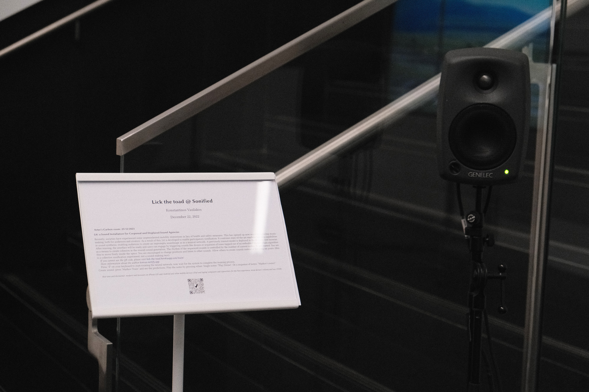

Lick the Toad
A web based interface for displaced agencies in musical interaction.
Konstantinos Vasilakos
Introduction
Back to the parlour
Imagine a weekend afternoon in a middle class parlour during the second half of the nineteenth century: a soiree, with music performed live by family members gathered around the piano. This scene - once a common occurrence that fostered creative social interaction - became increasingly rare; being displaced by substitute social behaviours arising from technological developments such as sound recording (van der Merwe, 1989), television, etc. Furthermore, as the schism between ‘popular’ and ‘art’ deepened, and the latter demanded increasing levels of virtuosity in order to realise musical ideas, performance of certain strands of contemporary music became nearly impossible for anyone but professionals; disappearing from the ‘soiree’ repertoire.(Fischman 2011)
Bridging the audience agency in musical interaction
Ltt is a web interface designed for bridging the gap between performer(s) and audience, allowing former and latter to engage interactively. (Vasilakos 2022) (Vasilakos 2021b) (Vasilakos 2021a)
Implementation notes
- Real time communication using web sockets1
- Sonifications on users’ devices using Markov Chain instructed by a Neural Network (Shanging Cai and Nielsen 2020) (regression algorithm).
- OSC communication with: MaxMSP, SuperCollider, Pure Data, etc.
Networked systems
Looking Back

Figure 1: Unknown author - The World’s Work, June 1906, vol. XII, no. II, Public Domain.
Influences
“The Art of and Apparatus for Generating and Distributing Music Electrically”.2 (Crab 2013)
| Cahill | Telharmonium | 1895/97 |
|---|---|---|
| Puskás | Telefonhírmondó | 1893 |
| Gray | Musical Telegraph | 1874 |
| Ader | Théâtrophone | 1881 |
| Soemering | n/a | 1809 |
Looking Forward
Networked Music Systems (Collins and Escrivan Rincón 2011)
Some works by the author in this field:
- BEER Pea Stew: Recalibrated (Wilson, Vasilakos, Lorway, Margetson, Yeung).
ICE: Symphony in Blue 2.0 Based on Kamran Ince’s initial work (Vasilakos, Sevilgen, Dagdeviren, Wilson).
Ltt: ML in the browser

Figure 2: Regression Value detection in LTT.
Ltt’s creative directions

Figure 1: Ltt as onsite installation. Arter Sonified 2022.
Live Coding: what now?
In live coding performances (Blackwell et al. 2022), there is always the question of how a coder is taking their decisions while changing the code on the fly, described also as “kairotic coding”. (Cocker 2018)
Current & Ongoing Work
A study on live coding using ltt and standard and/or non-standard synthesis techniques, using Xenakis’ fuzzy (probabilistic) methods. (Fielder 2016) (Collins 2011) (Ariza 2009) (Luque 2006)
[T]he amplitude and/or the time of the sound signal can be ruled by sieves. The subtle symmetries thus created should open a new field for exploration. (Luque 2006) #+BEGINQUOTE
An overview of Stochastic Synthesis
Term first used by Swiss 18th‐cent. mathematician Bernoulli regarding mathematical laws of probability. Applied by Xenakis to music procedures whereby overall sound contours are determined but inner details are left to chance or worked out mathematically by composer or by computer.
DSS - Dynamic Stochastic Synthesis Endeavor of LTT

Figure 1: One cycle of a stochastic synthesis wave.
Sound Example
[nil].choose;
Discussion
While ltt serves both as a standalone and live coding tool, it arguably allows for a greater coherence amongst peers on live performance. Similar to the concept of “back to the parlour” (Fischman, 2011) where members of the audience are able to enact an impromptu improvisation.
Thank you for listening…
Thanks
Courtesy to the majestic Org mode

…and the powerful SuperCollider

References
Ariza, Christopher. 2009. “Sonifying Sieves: Synthesis and Signal Processing Application of the Xenakis Sieve with Python and Csound.”
Blackwell, Alan F., Emma Cocker, Geoff Cox, Alex McLean, and Thor Magnusson. 2022. Live Coding: A User’s Manual. Software Studies. Cambridge, Massachusetts: The MIT Press.
Cocker, Emma. 2018. “What Now, What next— Kairotic Coding and the Unfolding Future Seized.” Digital Creativity 29 (1): 82–95. doi:10.1080/14626268.2017.1419978.
Collins, Nick. 2011. “Implementing Stochastic Synthesis for SuperCollider and iPhone.”
Collins, Nick, and Julio d’ Escrivan Rincón. 2011. The Cambridge companion to electronic music. Cambridge: Cambridge University Press. http://dx.doi.org/10.1017/CCOL9780521868617.
Crab, Simon. 2013. “The “Telharmonium’ or “Dynamophone’ Thaddeus Cahill, USA 1897.” 120 Years of Electronic Music. https://120years.net/wordpress/the-telharmonium-thaddeus-cahill-usa-1897/.
Fielder, Jon. 2016. “Creating Pitch Structures with Sieves.” Blog. KLANG - New Music On The Fringe. http://klangnewmusic.weebly.com/direct-sound/creating-pitch-structures-with-sieves.
Fischman, Rajmil. 2011. “Back to the Parlour.” Sonic Ideas – Ideas Sónicas 2: 53–66. https://en.cmmas.com/vs19.
Kennedy, Michael. 1996. “Stochastic.” The Concise Dictionary of Music. Oxford: Oxford University Press. https://www.oxfordreference.com/display/10.1093/acref/9780199578108.001.0001/acref-9780199578108-e-8719;jsessionid=DC77F14831B55FDA1E507BBD763D2677.
Luque, Sergio. 2006. “Stochastic Synthesis: Origins and Extensions.” The Netherlands: Institute of Sonology, Royal Conservatory.
Manning, Peter. 2004. Electronic and Computer Music. Rev. and expanded ed. Oxford ; New York: Oxford University Press.
Shanging Cai, Stanley Bileschi, and Eric D. Nielsen. 2020. “Chapter 1. Deep Learning and JavaScript · Deep Learning with JavaScript: Neural Networks in TensorFlow.Js –- Livebook.Manning.Com.” eBook. https://livebook.manning.com/book/deep-learning-with-javascript/chapter-1/1.
Vasilakos, Konstantinos. 2021a. “Konstantinos Vasilakos Showcase Lick The Toad NIME 2021.” In NIME 2021. Shanghai, China: PubPub. doi:10.21428/92fbeb44.974a1648.
———. 2021b. “Lick the Toad: A Web-Based Interface for Collective Sonification.” In Anais Do XVIII Simpósio Brasileiro de Computação Musical (SBCM 2021), 178–88. Brasil: Sociedade Brasileira de Computação - SBC. doi:10.5753/sbcm.2021.19444.
———. 2022. “A Networked Hybrid Interface for Audience Sonification and Machine Learning.” Revista Vórtex 10 (1). doi:10.33871/23179937.2022.10.1.4695.